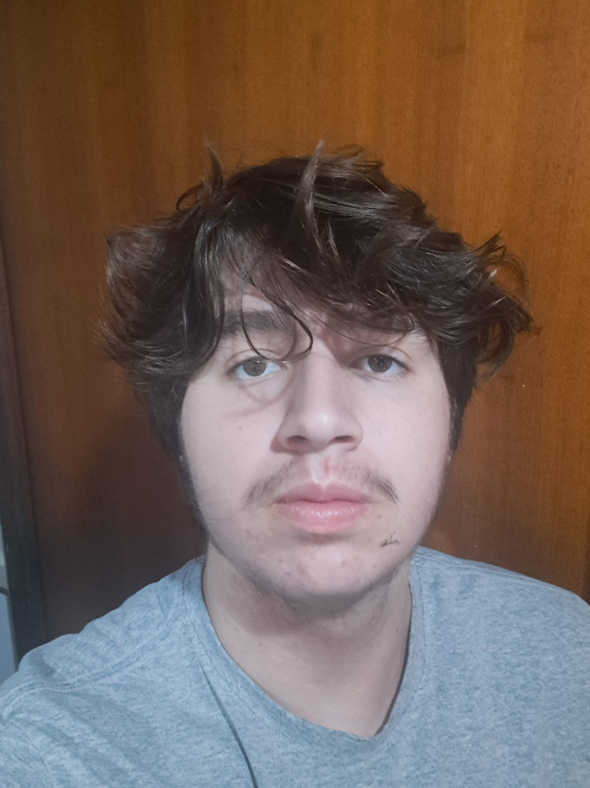

Falando um pouco sobre mim, me chamo Miguel Lucas, sou de Florianópolis (SC), nascido em 2008 tenho 17 anos. Vou falar principalmente sobre minha história na escola, meu ensino fundamental foi no mesmo bairro onde nasci, no Rio Vermelho, na escola Maria Conceição Nunes. Quando eu estava no oitavo ano, eu já tinha me decidido aonde eu iria seguir a minha carreira profissional, decidindo ser um programador de sistemas, então quando entrei para o Senai fiquei empolgado, para estudar no curso técnico, o começo do primeiro ano nessa escola não foi dos melhores, comecei sendo um dos piores alunos da sala, fiquei um pouco irritado pois a reclamação era que EU NÃO FALAVA MUITO DURANTE A AULA, além de irritado, fiquei com medo de minha mãe ver isso, então eu e ela conversamos para que eu fosse mais participativo durante as aulas. E então comecei a participar mais das aulas, no meio para o final do ano, quebrei minha perna, fiquei algumas semanas sem ir para a aula, e fazendo todas as atividades online, confesso que não foi muito bom fazer as atividades. Também, não posso negar, que foi muito bom ficar em casa. No final do ano eu voltei, e ainda ganhei um mérito estudantil, eu fiquei muito feliz em ganhar esse reconhecimento, minha mãe também ficou muito feliz, e por fim, meu final de ano foi bem tranquilo. Nas férias foi muito bom, no começo fiquei mais em casa, descansando, meus primos do Rio Grande do Sul vieram para cá, e eu fui muitas vezes na praia jogar bola com eles, também na praia fiz uma trilha na qual desisti no começo, e então agora pós férias, eu vou para o segundo ano do ensino médio, muito ansioso para aprender mais no curso técnico, e conseguir o que tenho como objetivo principal, se tornar um programador.
